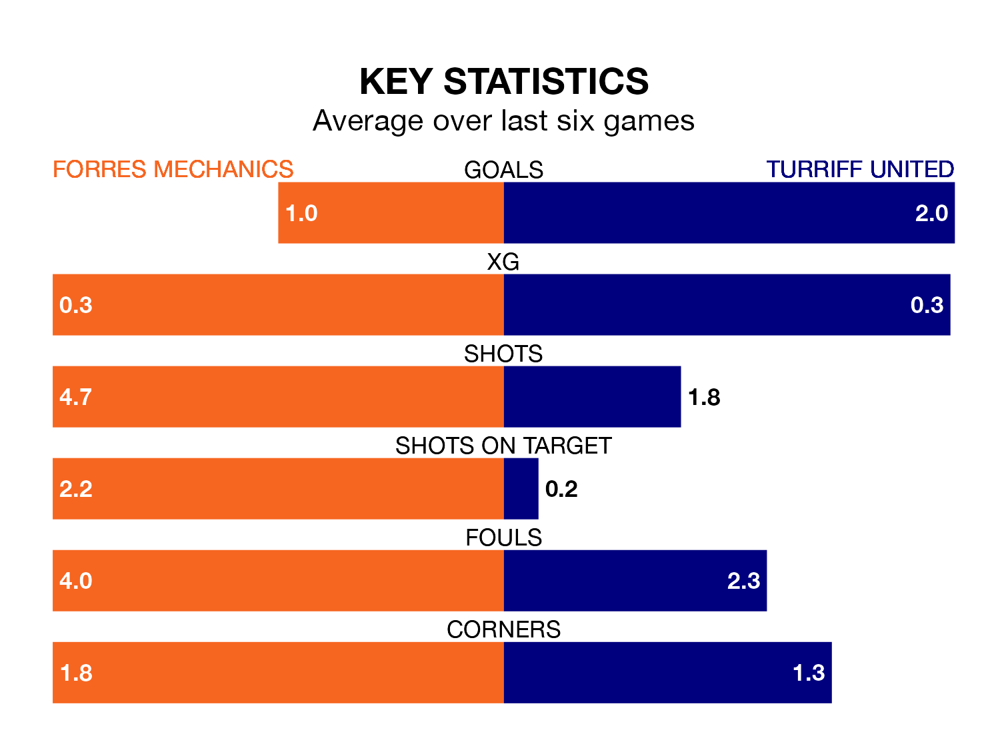

Struggling Forres Mechanics face Turriff United at Mosset Park on Saturday looking to build on a win in their last league outing.
After securing all three points with a 3-1 victory over Wick Academy on Wednesday, Forres Mechanics sit 15th in the Highland Football League.
They travel to play a Turriff side ninth in the standings, who were held in their last match, 0-0 against Lossiemouth, on April 13.
In the last 10 years, Forres Mechanics and Turriff have played each other on 12 occasions. Forres Mechanics won four of them, Turriff seven, and they drew once.
On average, Forres Mechanics scored 1.2 goals and Turriff 2.2 in those matches.
Their last meeting was on September 16, when Turriff won 2-0 at home.
With 36 goals in 33 games so far this season, Forres Mechanics are scoring at below the league average rate with 1.1 goals per game. And they are conceding more than average, letting in 62 goals at a rate of 1.9 per game.
Turriff, meanwhile, are above average scorers, with 2.3 goals per game, compared to a league average of 1.8. They have conceded 1.8 goals per game.
The hosts are in disappointing form in the Highland Football League, with one win and two draws from their last six games.
With two wins and two draws over that period, United's form is better – they have taken eight points from 18, compared to Forres Mechanics's five.
Updated: 15:40 (UTC), 18/04/24